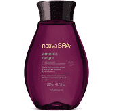
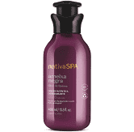
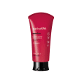
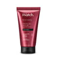
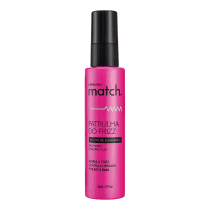
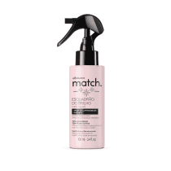

Você é a especialista
Você sabe a diferença entre
-
Na hora da venda, você sabe explicar a diferença de cada produto para o cliente?
Não?
Vem aqui, eu te explico!
-
Óleo
A maior propriedade do óleo é criar uma película (oleosa) sobre a pele. Assim, impedindo que a água da própria pele evapore gerando o ressecamento.
O diferencial desse produto, além do incrível e concentrado poder do óleo de quinoa conjuntamente a vitamina E (Tocoferol) . É a presença da substância LAURETH-2 em sua composição, que ajuda a penetração do óleo na pele, causando um poderoso efeito de cuidado. -
Hidratante
O hidratante, além de formar essa película que evita a água de evaporar, ele também fornece mais água para a pele. Mas quais são as substâncias que fazem esse hidratante tão poderoso?
O óleo de quinoa não poderia faltar aqui, mas outro componente que faz a diferença é o ISOHEXADECANE que tem uma forte capacidade de reter a água na pele e proporciona uma sensação de pele sequinha e aveludada. Além disso, ainda tem o ACRYLATES que forma o filme na pele, impedindo que a água evapore .
-
Creme para pentear
A maior propriedade do óleo é criar uma película (oleosa) sobre a pele. Assim, impedindo que a água da própria pele evapore gerando o ressecamento.
O diferencial desse produto, além do incrível e concentrado poder do óleo de quinoa conjuntamente a vitamina E (Tocoferol) . É a presença da substância LAURETH-2 em sua composição, que ajuda a penetração do óleo na pele, causando um poderoso efeito de cuidado. -
Leave-in
O hidratante, além de formar essa película que evita a água de evaporar, ele também fornece mais água para a pele. Mas quais são as substâncias que fazem esse hidratante tão poderoso?
O óleo de quinoa não poderia faltar aqui, mas outro componente que faz a diferença é o ISOHEXADECANE que tem uma forte capacidade de reter a água na pele e proporciona uma sensação de pele sequinha e aveludada. Além disso, ainda tem o ACRYLATES que forma o filme na pele, impedindo que a água evapore .
-
Serúm
A maior propriedade do óleo é criar uma película (oleosa) sobre a pele. Assim, impedindo que a água da própria pele evapore gerando o ressecamento.
O diferencial desse produto, além do incrível e concentrado poder do óleo de quinoa conjuntamente a vitamina E (Tocoferol) . É a presença da substância LAURETH-2 em sua composição, que ajuda a penetração do óleo na pele, causando um poderoso efeito de cuidado. -
Finalizador
O hidratante, além de formar essa película que evita a água de evaporar, ele também fornece mais água para a pele. Mas quais são as substâncias que fazem esse hidratante tão poderoso?
O óleo de quinoa não poderia faltar aqui, mas outro componente que faz a diferença é o ISOHEXADECANE que tem uma forte capacidade de reter a água na pele e proporciona uma sensação de pele sequinha e aveludada. Além disso, ainda tem o ACRYLATES que forma o filme na pele, impedindo que a água evapore .